Real imagery and computed geometry. Ring dimensions and depth are in millimeters. Independent pose/registered-shape GT evaluation NOT_EVALUABLE. Native schedules differ; A→B B views are HERO supports.
Native coverage, fixed ten-video denominator
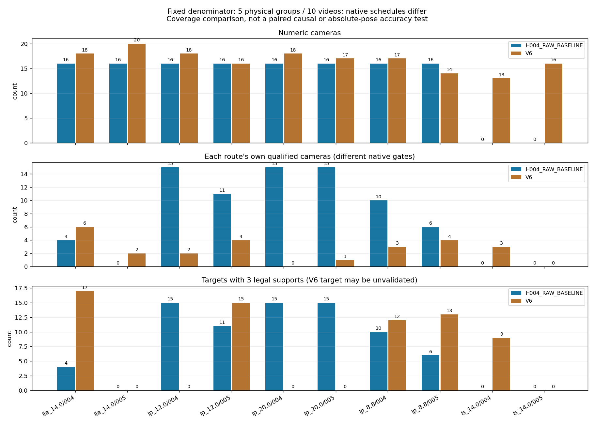
Actual landmarks/cameras, axes in mm
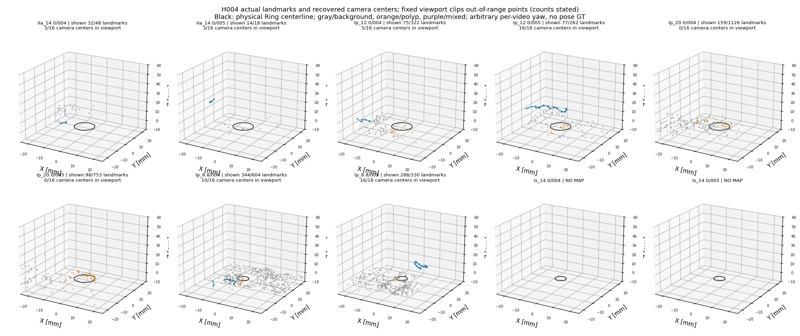
GP_IIa_14.0mm_closed_R10_single_refY_004 / H004_RAW_BASELINE
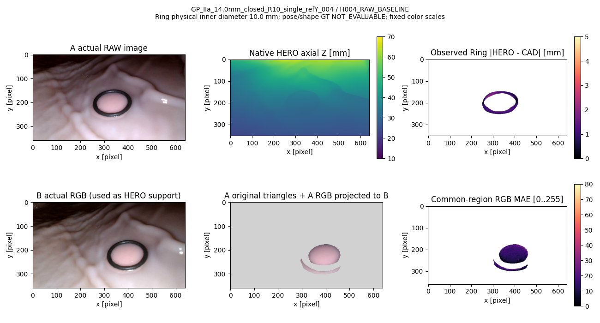
GP_Ip_12.0mm_closed_R10_single_refY_004 / H004_RAW_BASELINE
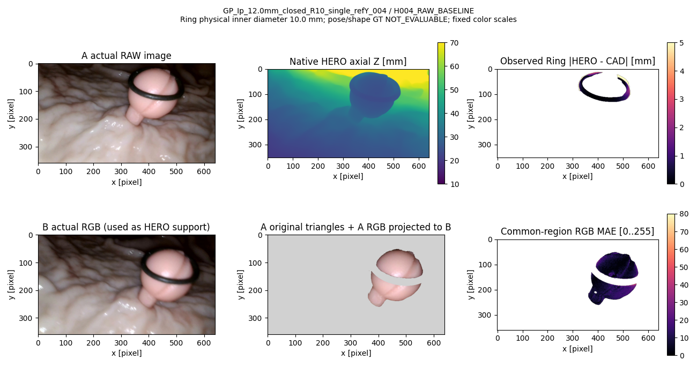
GP_Ip_12.0mm_closed_R10_single_refY_005 / H004_RAW_BASELINE
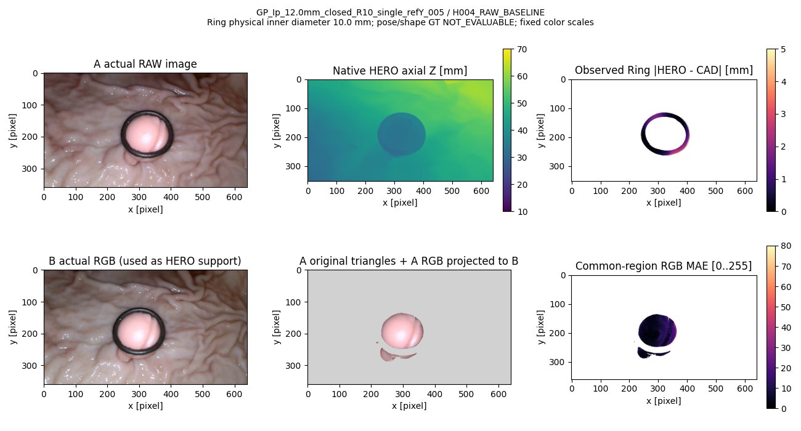
GP_Ip_20.0mm_closed_R10_single_refY_004 / H004_RAW_BASELINE
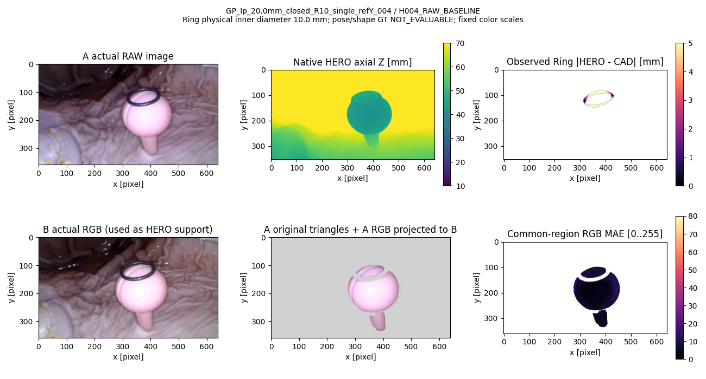
GP_Ip_20.0mm_closed_R10_single_refY_005 / H004_RAW_BASELINE
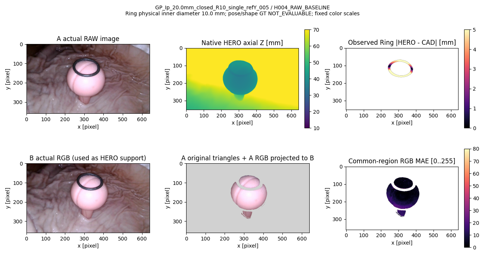
GP_Ip_8.8mm_closed_R5_single_refY_004 / H004_RAW_BASELINE
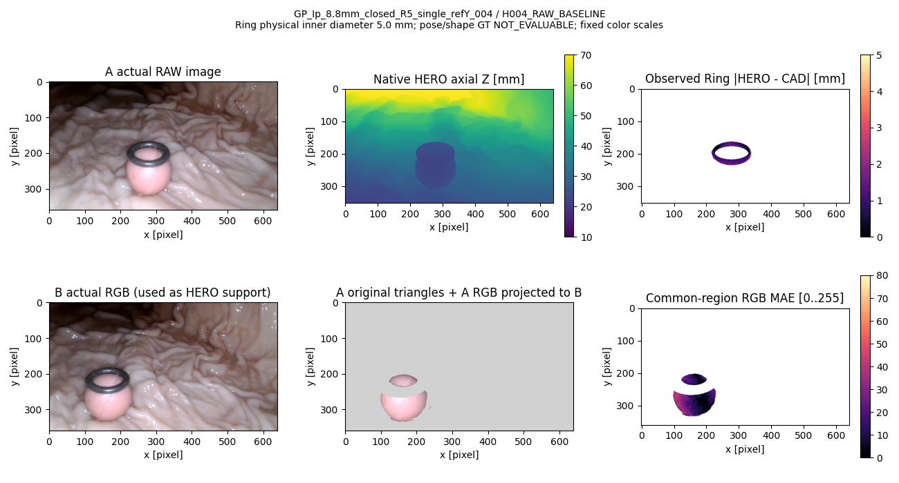
GP_Ip_8.8mm_closed_R5_single_refY_005 / H004_RAW_BASELINE
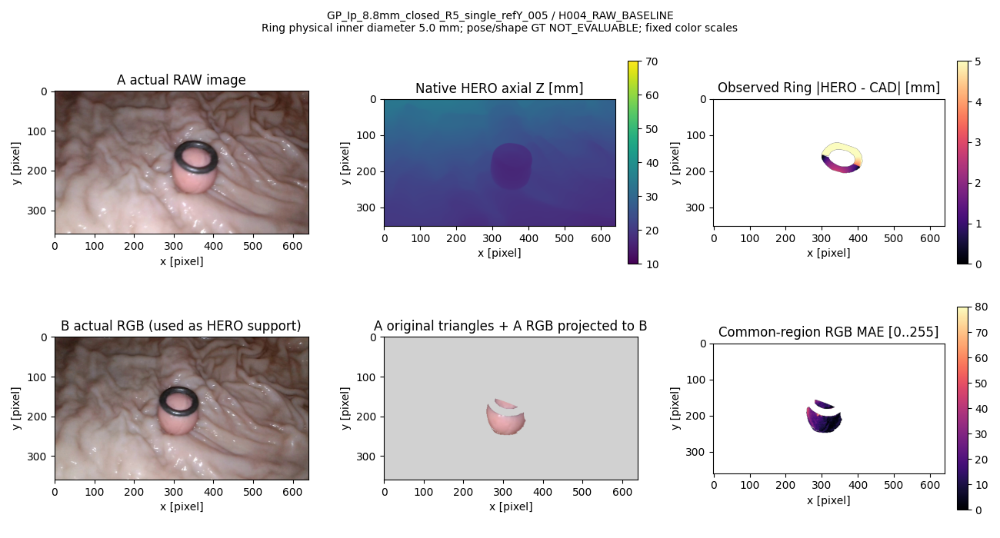
GP_IIa_14.0mm_closed_R10_single_refY_004 / V6_LIMITED_DIAGNOSTIC
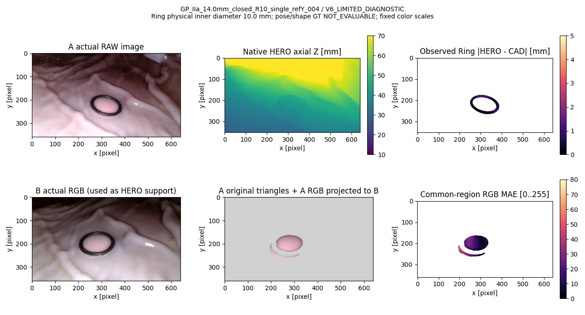
GP_Ip_12.0mm_closed_R10_single_refY_005 / V6_LIMITED_DIAGNOSTIC
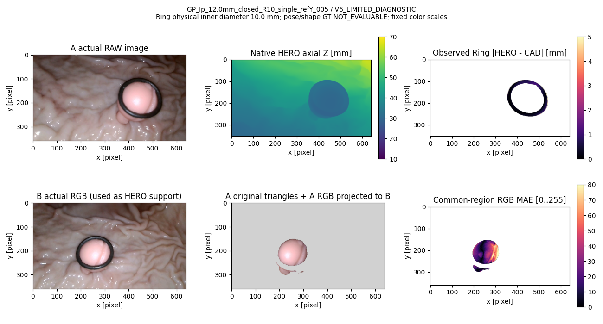
GP_Ip_8.8mm_closed_R5_single_refY_004 / V6_LIMITED_DIAGNOSTIC
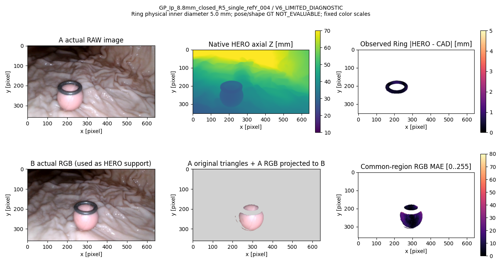
GP_Ip_8.8mm_closed_R5_single_refY_005 / V6_LIMITED_DIAGNOSTIC
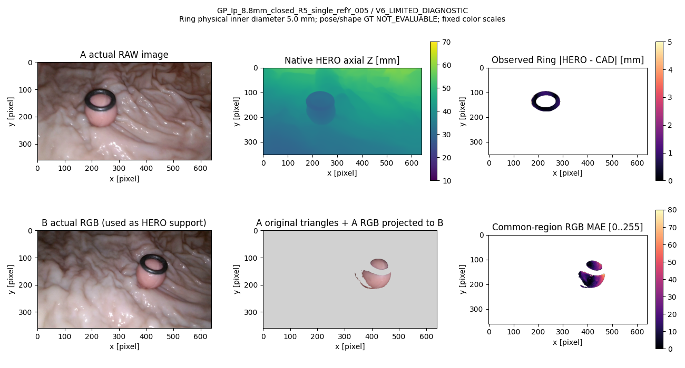
GP_Is_14.0mm_closed_R5_single_refY_004 / V6_LIMITED_DIAGNOSTIC
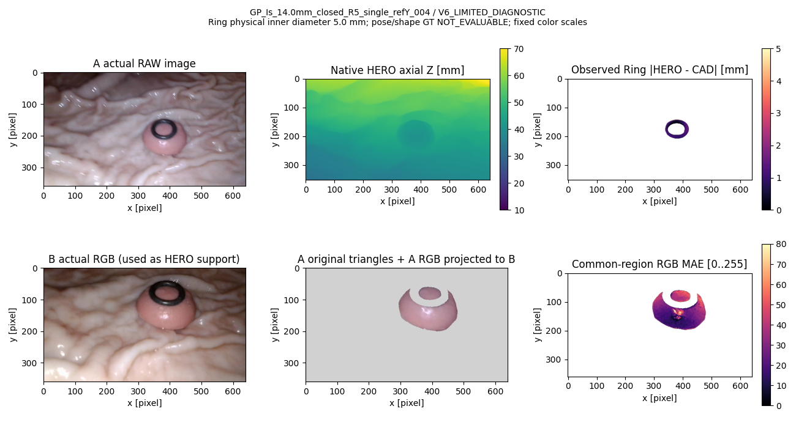